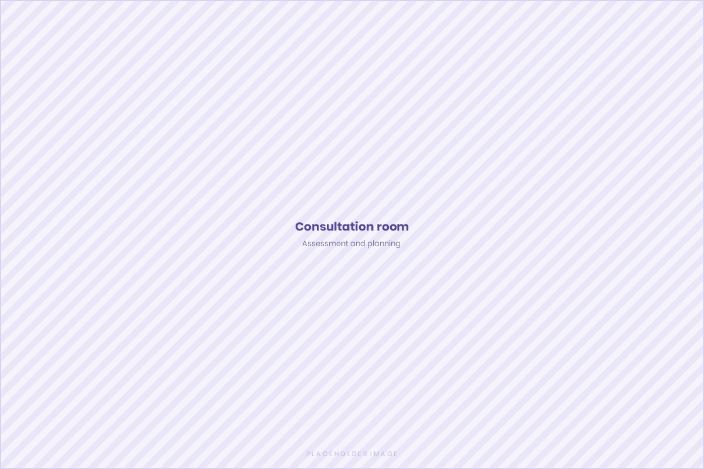

Assessment before treatment
Nothing is recommended before your skin, history, and goals are understood. A consultation is a clinical appointment, not a sales conversation.
Vathraja Facial Chambers is the facial aesthetics arm of a premium dentofacial aesthetics destination at One Galle Face, Colombo. We bring dermatology, facial aesthetics, injectables, and doctor-led cosmetic care together under one consultation-first approach.

Our positioning
Healthy skin. Facial harmony. Natural confidence.
Facial aesthetics in Colombo has grown quickly, and much of it is sold by treatment name. Vathraja was established to work the other way around: understand the person and the clinical picture first, then discuss what may help.
Every pathway here is led by a consultant or doctor. That means an assessment before a recommendation, a plain explanation of what a treatment can and cannot do, and a clear answer when something is not suitable for you.
We are part of the Danthaja and Vathraja destination at One Galle Face — a shared commitment to dentofacial aesthetics under the umbrella idea of a Pinnacle in Dentofacial Aesthetics. In practice, that means your skin, facial balance, and smile can be considered together rather than in isolation.
Nothing is recommended before your skin, history, and goals are understood. A consultation is a clinical appointment, not a sales conversation.
Medical history, medications, allergies, and previous treatments are reviewed before any option is confirmed as appropriate.
Facial treatment is planned in the context of the whole face, so that any change reads as proportionate rather than isolated.
We describe what a treatment may support, how long it may take, and what it will not change — before you decide.
Care does not end when you leave. You receive written aftercare, a contact point, and a review appointment where one is appropriate.
You will not find guarantees on this website. Outcomes vary between individuals, and honest language is part of how we practise.
Each pathway at Vathraja is the responsibility of a named consultant or doctor, and you will know who is responsible for your care.

Consultant Oral and Maxillofacial Surgeon
Special interest in facial plastic surgery and facial aesthetics
Dr Anushan Madhushanka takes time to listen to each patient’s oral, jaw or facial concerns and understand what matters most to them. With a calm, specialist-led approach, he explains suitable options with clarity and care, always placing safety, facial harmony and natural-looking results at the heart of treatment.

Consultant Oral and Maxillofacial Surgeon
Dr Dilan Fernando offers a warm and thoughtful consultation for patients with oral, jaw or facial concerns. He listens attentively, explains each suitable option in a clear and reassuring way, and guides patients through a carefully planned pathway of care centred on safety, facial balance and individual needs.

Consultant Dermatologist
Dr Dulini Liyanagama welcomes patients with skin, hair or nail concerns into a calm and supportive consultation. She listens with care, explains her findings in a clear and reassuring manner, and places healthy skin first when recommending evidence-based treatment options suited to each individual.

Consultant Dermatologist
Dr Kavinda Nanayakkara offers a friendly and reassuring consultation for patients with skin, hair or nail concerns. He takes time to understand each concern, explains suitable options with clarity and kindness, and supports healthier skin through medically guided care tailored to the individual.

Dental Surgeon
Special interest in facial aesthetics
Dr Madhubhani Dissanayake welcomes patients into a calm and private setting where they can speak openly about their facial-aesthetic concerns and goals. She listens with care, explains suitable options thoughtfully and supports informed choices centred on comfort, natural-looking improvement and personalised aftercare.
Portraits are placeholders. Clinician names, qualifications and registration details are as supplied by the clinic; the portrait images are labelled placeholders pending the clinic’s own photography. No patient photographs, testimonials, or before-and-after images appear anywhere on this site.
Begin with a conversation
Book a consultation at the Danthaja and Vathraja dentofacial aesthetics destination at One Galle Face, Colombo. Our team will help you understand your options, the right pathway, and what to expect.
Treatment outcomes vary by individual and require a professional consultation.

Danthaja Aligner Center focuses on the smile — aligners, orthodontic assessment, and dental aesthetics. Vathraja Facial Chambers focuses on skin, facial balance, and doctor-led facial care.
Where a goal spans both, the two can be planned together rather than sequentially, with realistic timelines agreed at the start.